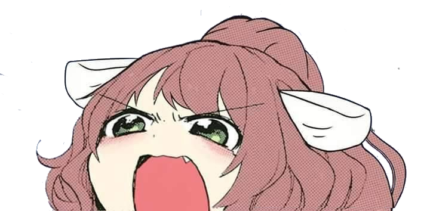
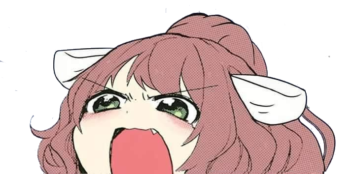

Sean bienvenidos a Awoo Project un lugar donde abundan los awoos pero lo mas importante
"Los awoos no se cuestionan - Kumiz"
Hey
Oops, dejame arreglarlo

 


Sean bienvenidos a Awoo Project un lugar donde abundan los awoos pero lo mas importante
"Los awoos no se cuestionan - Kumiz"
Just Monika
"Just Monika - Monika"


Awoo es una expresión linda usada en la cultura anime, la cual son empleados en humanos antropomorficos con características de lobos, o en algunos casos de perro. Momiji no es la excepción, ya que su raza son lobos blancos, y el fandom le da un carácter más sumiso y tierno.
Momiji Inubashiri es una de las Tengu que habitan la Montaña Youkai, así como la Sub-Jefa del nivel 4 de Mountain of Faith.
Si un Tengu es una forma de Youkai en la mitología Japonesa y Youkai es un término muy asociado con las criaturas del folklore Japonés y los fantasmas. El término también se puede aplicar generalmente para todo aquel ser sobrenatural o leyenda, de cualquier cultura.
El agujero en la pared. Es imposible que fuera yo. Mira la dirección en que sobresale la masilla. ¿Un vecino escandaloso? ¿Un novio enfadado? Jamás lo sabre. No estaba en casa. Miro dentro buscando una pista ¡No! No veo nada. Me tambaleo, ciega, velada como un rollo de pelicula que alguien dejó al sol. Pero es tarde. Mis retinas. Ya se ha quemado en ellas para siempre la imagen absurda. Solo es un pequeño agujero. No era demasiado luminoso. Era demasiado profundo. Se alargaba para siempre hasta ocuparlo todo. Un agujero de infinitas opciones. Ahora me doy cuenta de que no estaba mirando dentro. Estaba mirando fuera. Y el, al otro lado, era quien miraba dentro. Pero no me miraba a mi. Confundida, miro frenéticamente a mi alrededor. Pero mis ojos quemados ya no distinguen los colores. ¿Hay alguien más en la habitación? ¿Está hablando alguien? ¿O solo hay poemas en simples hojas de papel? ¿El sonido de un garabateo frenético que engaña a mis oidos? La habitación empieza a encogerse. Sus paredes me oprimen. El aire que respiro se disipa antes de llegar a mis pulmones. Entro en pánico. Tiene que haber una salida. Está ahi mismo. Él está ahi mismo. Me trago mis miedos y empuño el boligrafo.
Hay una vieja historia sobre una dama que recorre la Tierra. La dama que lo sabe todo. Una hermosa dama que encontró todas las respuestas, Todos los significados, Todos los propósitos, Y todo lo que alguien buscó alguna vez. Y aqui estoy, una pluma Vagando por el cielo, victima de las corrientes de viento. Dia tras dia, busco. Busco sin apenas esperanza, a sabiendas de que las leyendas no existen. Pero cuando todo lo demás me falla, Cuando todos me dan la espalda, La leyenda es lo único que queda, la última estrella tenue que brilla en un cielo crepuscular. Hasta que un dia, el viento deja de soplar. Caigo. Caigom caigo y mi caida no cesa. Suave como una pluma. Una pluma seca, sin expresión. Pero una mano me atrapa entre el pulgar y el índice. La mano de una hermosa dama. La miro a los ojos y su mirada es infinita. La dama que lo sabe todo, también lo que estoy pensando. Antes de que pueda hablar, responde con una voz hueca "Encontré todas las respuestas y todas quedan en nada. No hay significado. No hay propósito. Solo buscamos lo imposible. No soy tu leyenda. Tu leyenda no existe".
Estaba errando en una casa abandonada de noche. Estaba perdida,buscando una salida. Sólo quería irme a casa. Llegué a una gigantesca habitación vacía,sus paredes y techo eran oscuros. Apresuré mis pasos para llegar al otro lado. O a una pared,lo que sea. De pronto,el piso ya no estaba debajo. Caminé hacia un hoyo de indeterminada anchura. Sentí por cinco segundos antes de caer en agua caliente. Adivinando hacia que lado era arriba, salí por mi cuenta. El aire era húmedo,y los sonidos de mi salpicada revibraban sin fin. Mi visión fue completamente tragada por la oscuridad. Con una mano,pude sentir la dura pared de metal del contenedor. Mis trimpas ya se estaban cansando.